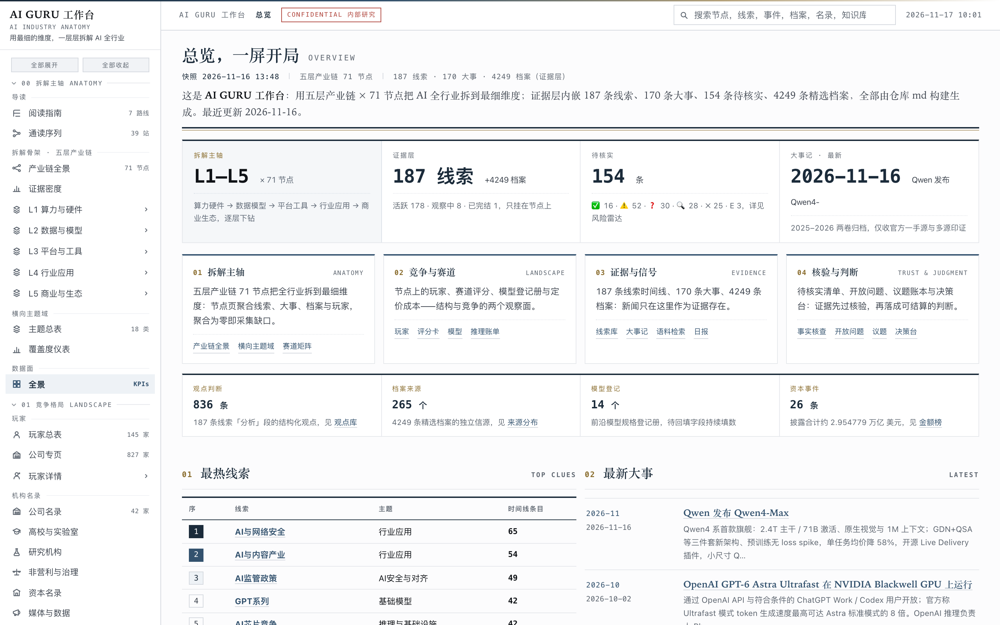
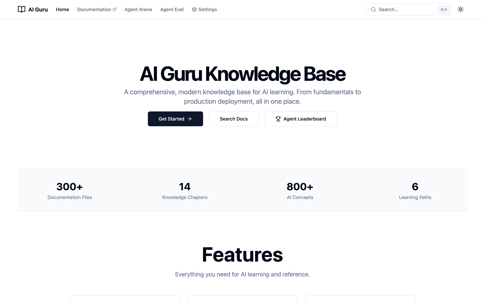

命中 5 条，覆盖 4 个面；文档站内容止于 2026-04。
| 命中 | 面 | 路径 | 更新 |
|---|---|---|---|
| Qwen4-Max 专题学习页 2.4T 主干、71B 激活，GDN+QSA（Qwen Sparse Attention）架构拆解与新词速查 | 发布站 | 02-数据与模型层/03-前沿闭源模型/Qwen4-Max.md | 2026-11-17 |
| Qwen 线索时间线 2026-11-16 Qwen4-Max 发布条目，官方博客与多源印证 | 拆解台 | 证据层/开源模型与生态/Qwen.md | 2026-11-16 |
| 2026 大事记 2026-11 段登记 Qwen 发布 Qwen4-Max | 拆解台 | _2026大事记.md | 2026-11-16 |
| Multimodal Architectures 2026 CLIP、LLaVA、GPT-4o、Qwen-VL 多模态融合 | 前端应用 | 05_大模型/09_多模态模型/06_多模态_架构_2026.md | 日期待接入 |
| AI Technology Landscape AI 技术全景，提及 Qwen 系列的旧版快照 | 文档站 | 00_AI_Introduction/AI_Technology_Landscape/ | 2026-04 |
四个面，一屏预览




结果区的三个备用状态
没有命中「quantum blockchain」
检索覆盖仓库全部 md 与数据集；词太长或太生僻时会落空。
换个词再试，或从左树逐层浏览。
索引未加载
数据集未构建，检索无处可查。
在仓库根目录运行 make dataset 后重试。
设计稿说明：实现时三态由真实检索驱动，示意内容不进生产。
02-数据与模型层/03-前沿闭源模型/Qwen4-Max.md
Qwen4-Max 专题学习页
2.4T 主干、71B 激活，GDN+QSA（Qwen Sparse Attention）架构拆解与新词速查
阿里 Qwen4 系列首款旗舰闭源模型：2.4T 主干参数、原生视觉、百万上下文，主打「更省 token 的 AI 同事」。
本报告新名词速查（节选）
| 名词 | 大白话 |
|---|---|
| QSA（Qwen Sparse Attention） | 先派廉价「前台」按块筛出相关段落，再让「专家」精读 |
| GDN（Gated DeltaNet） | 把读过的历史浓缩进固定大小的「笔记本」，文章再长笔记也不变厚 |
| Gated Residual（GR） | 残差高速路从 1 条扩成 4 条还装了闸门，梯度走得稳 |
| N-gram Embedding | 328B 查表参数给模型发一批「常用词组卡片」，扩容量几乎不加算力 |
节选自该页「新名词速查」；完整页面含逐段拆解、三张图与评测表。
该文件的完整渲染由实现阶段的 md 渲染器提供；此设计稿只内嵌了第一条的真实节选。